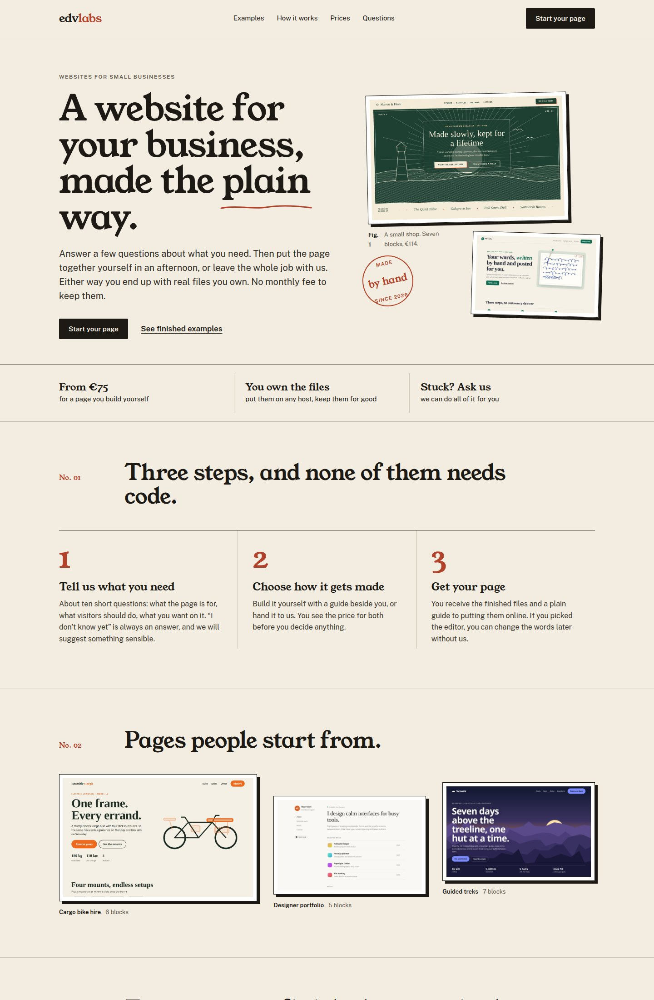
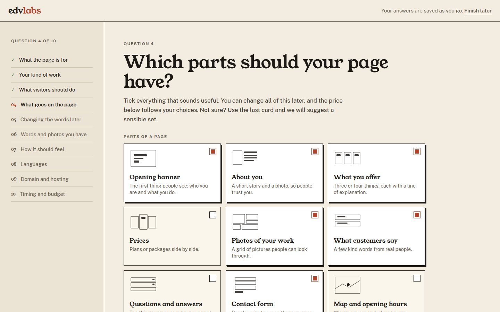
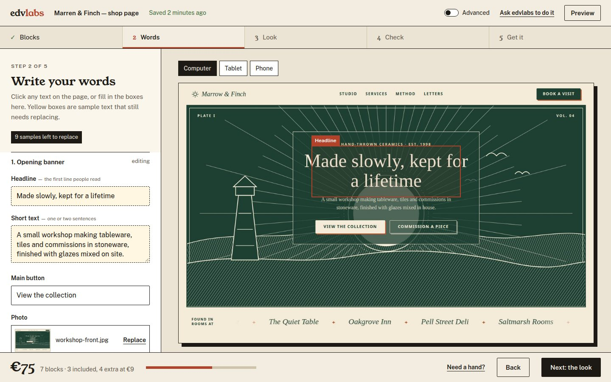
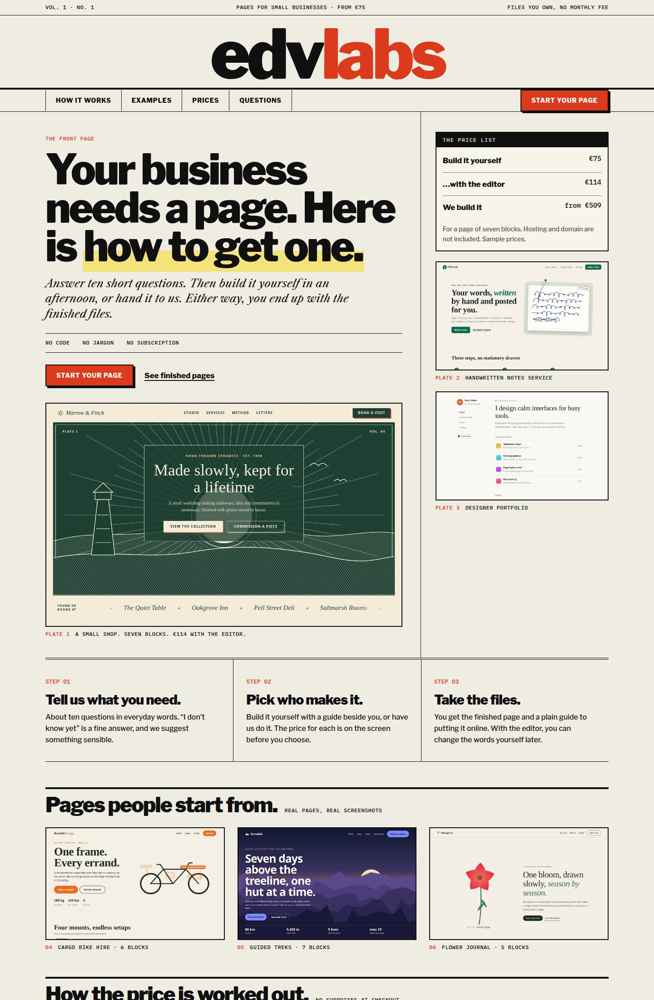
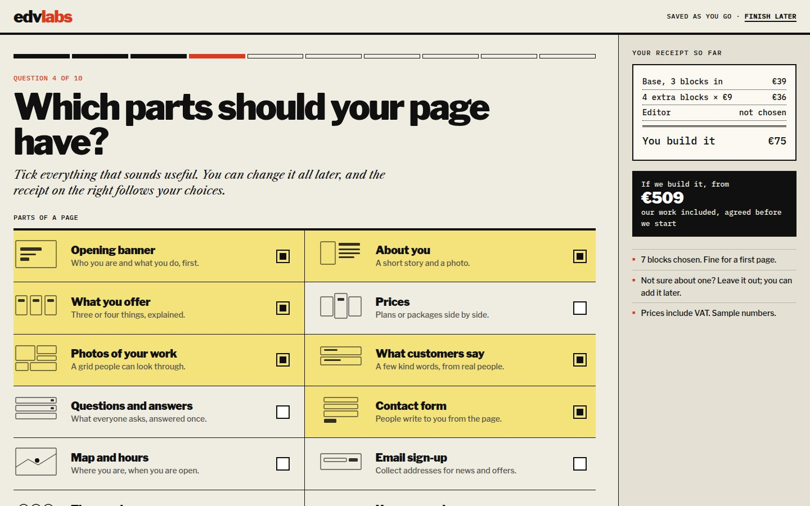
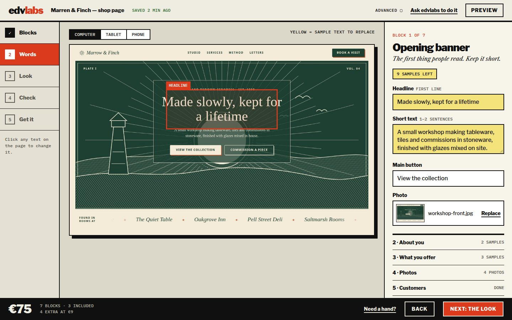

The same three screens in two looks: the home page, question 4 of the questionnaire (“Which parts should your page have?”), and step 2 of the builder (“Words”). All text and prices are samples; the screenshots are real pages from the vault. Click a picture to open the live mock-up.
Calm and warm. A soft serif for headlines, plain sans for the interface, one clay-red accent, thin rules, offset “paper” shadows, numbered sections and a hand-drawn underline.

Home
Question 4 of 10
Builder, step 2: Words (steps along the top)Confident and loud. Heavy black rules, a very large wordmark, tight heavy headlines, italic serif for the human voice, mono labels, a signal red, and prices set out like a ledger.

Home
Question 4 of 10 (live receipt on the right)
Builder, step 2: Words (steps down the left)| Rule | A | B |
|---|---|---|
| No gradient headlines, glow, orbs, glass | Pass | Pass |
| No purple-to-blue gradients, one accent only | Pass (clay red) | Pass (signal red; yellow only marks sample text) |
| No emoji or generic icon set | Pass (small line wireframes) | Pass (same wireframes) |
| Not three identical rounded cards by default | Partly: three numbered steps and a three-image row | Partly: three columns with rules, but a table and a ledger break the pattern |
| No “eyebrow pill” on everything | Pass (plain small caps) | Pass (mono labels) |
| Real screenshots, no stock images | Pass | Pass |
| Plain words, no “seamless / unlock / supercharge” | Pass | Pass |
| Contrast and keyboard focus | To be measured in E1.3 | To be measured in E1.3 |
Not yet designed in either direction: phone layouts of the builder, error and empty states, the checkout, the dashboard and the emails. Those come after you choose.